<!DOCTYPE html>
<html lang="en">
<head>
<meta charset="UTF-8">
<meta name="viewport" content="width=device-width,initial-scale=1">
<title>Figure it Out — Symmetry</title>
<meta name="description" content="Class 6 Mathematics · Symmetry · Figure it Out">
<link rel="icon" href="data:image/svg+xml,<svg xmlns='http://www.w3.org/2000/svg' viewBox='0 0 100 100'><text y='.9em' font-size='90'>📘</text></svg>">
<link rel="stylesheet" href="../../../assets/book.css">
<link rel="stylesheet" href="https://cdn.jsdelivr.net/npm/katex@0.16.11/dist/katex.min.css" crossorigin="anonymous">
</head>
<body>
<header class="topbar">
<div class="topbar-in">
  <div class="crumb">
    <span class="c1"><a href="../../../index.html">Library</a> · <a href="../../index.html">Class 6 Mathematics</a></span>
    <span class="c2">Symmetry · Figure it Out</span>
  </div>
  <a class="tb-btn" data-nav="prev" href="../../09-symmetry/06-generating-shapes-having-lines-of-symmetry/index.html" title="Generating shapes having lines of symmetry">←</a>
  <details class="drawer"><summary class="tb-btn" title="Sections in this chapter">☰</summary>
<div class="drawer-panel"><div class="dh">Symmetry</div><a href="../01-chapter-opener/index.html">Chapter opener</a><a href="../02-line-of-symmetry-9.1/index.html">9.1 Line of Symmetry</a><a href="../03-figure-it-out/index.html">Figure it Out</a><a href="../04-figures-with-more-than-one-line-of-symmetry/index.html">Figures with more than one line of symmetry</a><a href="../05-reflection/index.html">Reflection</a><a href="../06-generating-shapes-having-lines-of-symmetry/index.html">Generating shapes having lines of symmetry</a><a href="../07-figure-it-out/index.html" aria-current="page">Figure it Out</a><a href="../08-rotational-symmetry-9.2/index.html">9.2 Rotational Symmetry</a><a href="../09-figure-it-out/index.html">Figure it Out</a><a href="../10-symmetries-of-a-circle/index.html">Symmetries of a circle</a><a href="../11-figure-it-out/index.html">Figure it Out</a><a href="../12-game/index.html">Game</a><a href="../13-summary/index.html">Summary</a><a href="../14-solutions/index.html">CHAPTER 9 — SOLUTIONS</a></div></details>
  <a class="tb-btn" data-nav="next" href="../../09-symmetry/08-rotational-symmetry-9.2/index.html" title="9.2 Rotational Symmetry">→</a>
  <button class="tb-btn" data-theme-toggle title="Toggle light / dark" aria-label="Toggle light or dark theme">◐</button>
</div>
<div class="progress"><span style="width:75.8%"></span></div>
</header>
<main class="wrap">
<div class="sec-head">
  <p class="eyebrow"><a href="../index.html">Chapter 9 · Symmetry</a></p>
  <h1>Figure it Out</h1>
  <p class="sec-meta">Textbook pages 7–14 · 24 figures</p>
</div>
<article class="prose">
<p> Figure it Out</p>
<p>Punching Game</p>
<p>The fold is a line of symmetry. Punch holes at different locations of a folded square sheet of paper using a punching machine and create different symmetric patterns.</p>
<figure class="fig">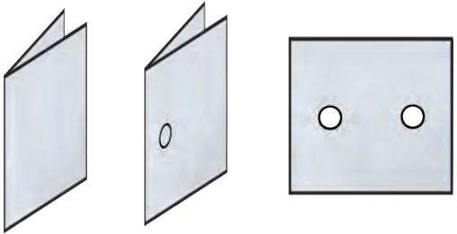</figure>
<ul class="qlist">
<li><span class="mk">1.</span><span class="lt">In each of the following figures, a hole was punched in a folded</span></li>
</ul>
<p>square sheet of paper and then the paper was unfolded. Identify the line along which the paper was folded. Figure (d) was created by punching a single hole. How was the paper folded?</p>
<figure class="fig wide">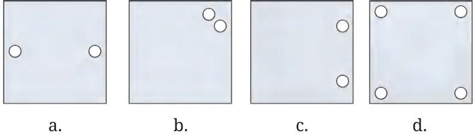</figure>
<ul class="qlist">
<li><span class="mk">2.</span><span class="lt">Given the line(s) of symmetry, find the other hole(s):</span></li>
</ul>
<figure class="fig wide">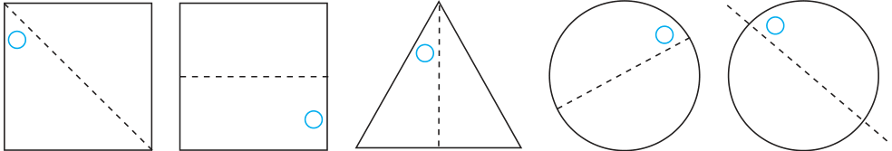</figure>
<ul class="qlist">
<li><span class="mk">a.</span><span class="lt">b. c. d. e.</span></li>
<li><span class="mk">3.</span><span class="lt">Here are some questions on paper cutting.</span></li>
</ul>
<p>Consider a vertical fold. We represent it this way:</p>
<p>Vertical Fold</p>
<figure class="fig">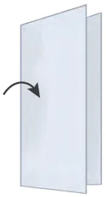</figure>
<p>Similarly, a horizontal fold is represented as follows:</p>
<p>Horizontal Fold</p>
<figure class="fig">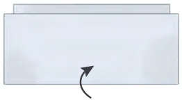</figure>
<p>4. After each of the following cuts, predict the shape of the hole when the paper is opened. After you have made your prediction, make the cutouts and verify your answer.</p>
<figure class="fig wide">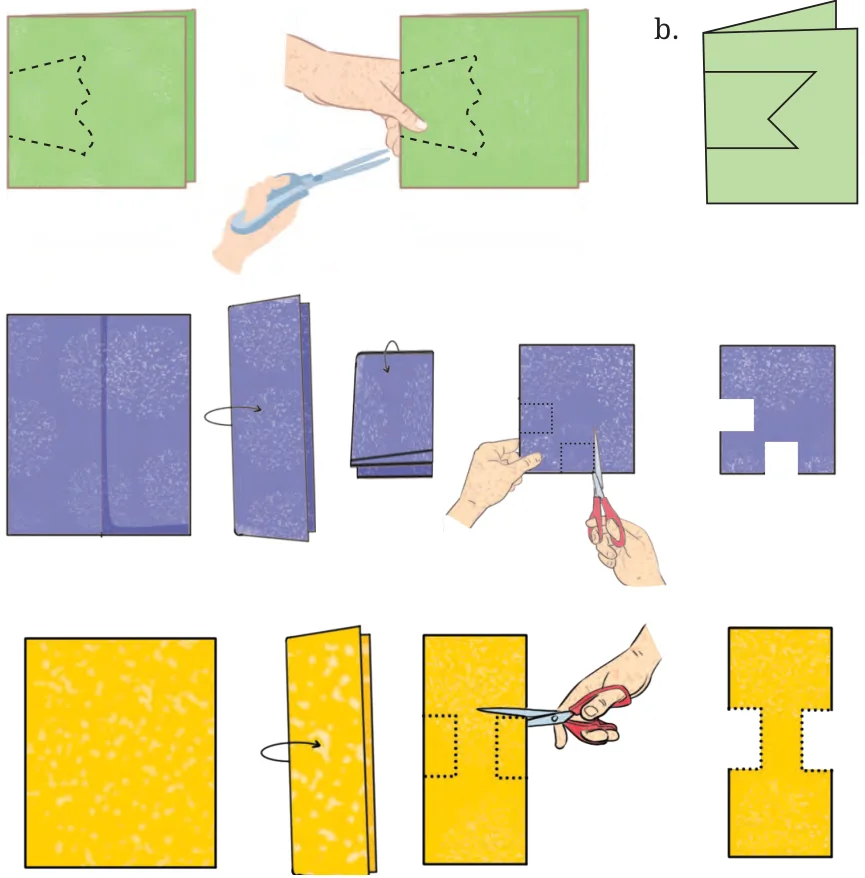</figure>
<p>a.</p>
<p>c.</p>
<p>d.</p>
<p>a single straight cut. How will you do it?</p>
<ul class="qlist">
<li><span class="mk">a.</span><span class="lt">The hole in the centre is a square.</span></li>
</ul>
<figure class="fig">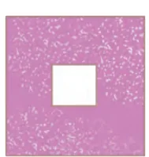</figure>
<ul class="qlist">
<li><span class="mk">b.</span><span class="lt">The hole in the centre is a square.</span></li>
</ul>
<figure class="fig wide">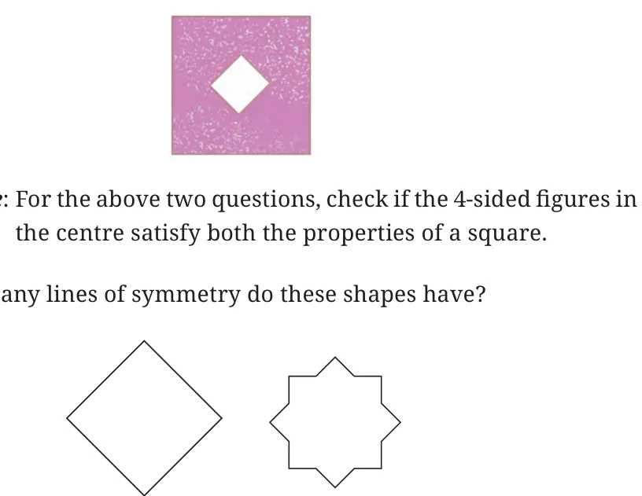</figure>
<h4 class="callout-h" id="s-note">Note</h4>
<ul class="qlist">
<li><span class="mk">6.</span><span class="lt">a.</span></li>
<li><span class="mk">b.</span><span class="lt">A triangle with equal sides and equal angles.</span></li>
</ul>
<figure class="fig">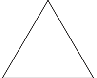</figure>
<ul class="qlist">
<li><span class="mk">c.</span><span class="lt">A hexagon with equal sides and equal angles.</span></li>
</ul>
<figure class="fig">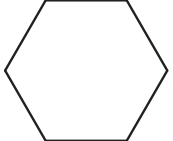</figure>
<ul class="qlist">
<li><span class="mk">7.</span><span class="lt">Trace each figure and draw the lines of symmetry, if any:</span></li>
</ul>
<figure class="fig">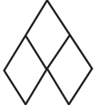</figure>
<figure class="fig">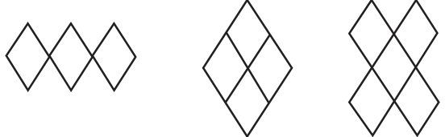</figure>
<figure class="fig">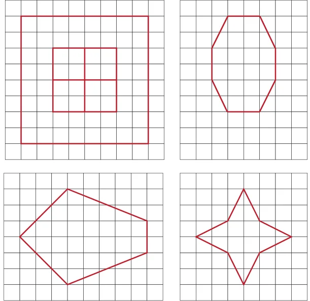</figure>
<ul class="qlist">
<li><span class="mk">8.</span><span class="lt">Find the lines of symmetry for the kolam below.</span></li>
</ul>
<figure class="fig">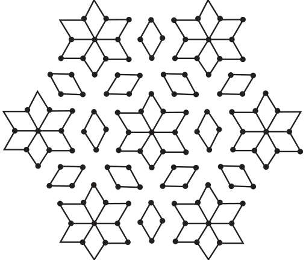</figure>
<ul class="qlist">
<li><span class="mk">9.</span><span class="lt">Draw the following.</span></li>
<li><span class="mk">a.</span><span class="lt">A triangle with exactly one line of symmetry.</span></li>
<li><span class="mk">b.</span><span class="lt">A triangle with exactly three lines of symmetry.</span></li>
<li><span class="mk">c.</span><span class="lt">A triangle with no line of symmetry.</span></li>
</ul>
<p>Is it possible to draw a triangle with exactly two lines of symmetry?</p>
<ul class="qlist">
<li><span class="mk">10.</span><span class="lt">Draw the following. In each case, the figure should contain at least</span></li>
</ul>
<p>one curved boundary.</p>
<ul class="qlist">
<li><span class="mk">a.</span><span class="lt">A figure with exactly one line of symmetry.</span></li>
<li><span class="mk">b.</span><span class="lt">A figure with exactly two lines of symmetry.</span></li>
<li><span class="mk">c.</span><span class="lt">A figure with exactly four lines of symmetry.</span></li>
<li><span class="mk">11.</span><span class="lt">Copy the following on squared paper. Complete them so that the</span></li>
</ul>
<p>blue line is a line of symmetry. Problem (a) has been done for you.</p>
<figure class="fig wide">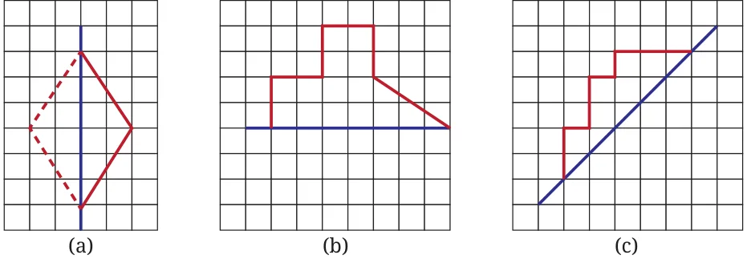</figure>
<figure class="fig wide">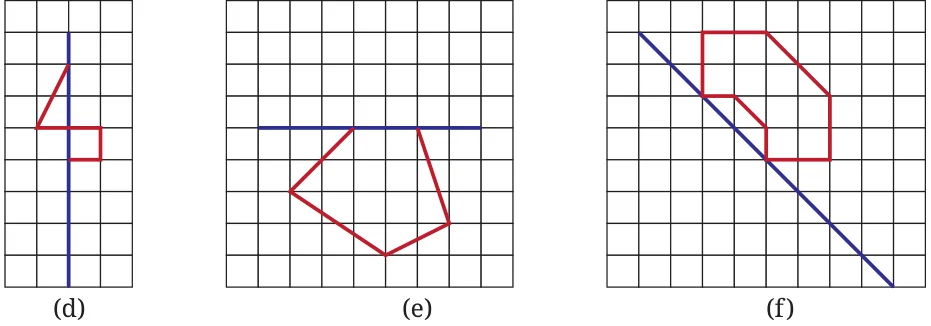</figure>
<p>Hint: For (c) and (f), see if rotating the book helps!</p>
<ul class="qlist">
<li><span class="mk">12.</span><span class="lt">Copy the following drawing on squared paper. Complete each one</span></li>
</ul>
<p>of them so that the resulting figure has the two blue lines as lines of symmetry.</p>
<figure class="fig wide">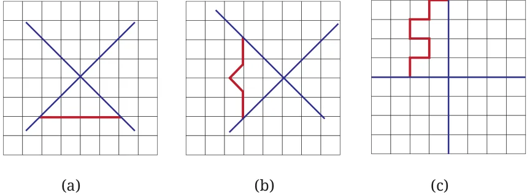</figure>
<figure class="fig table-fig wide">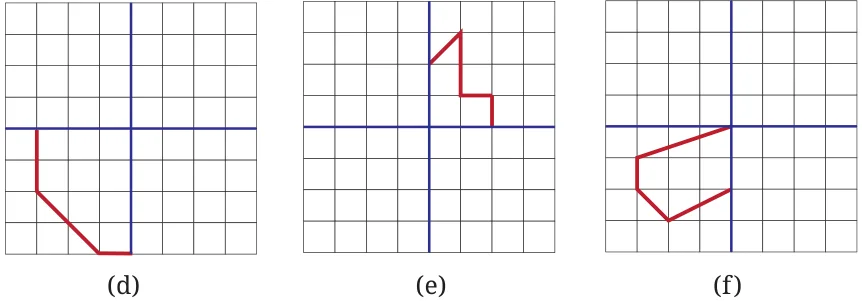</figure>
<ul class="qlist">
<li><span class="mk">13.</span><span class="lt">Copy the following on a dot grid. For each figure draw two more</span></li>
</ul>
<p>lines to make a shape that has a line of symmetry.</p>
<figure class="fig wide">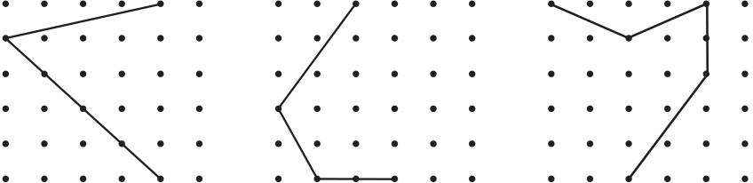</figure>
<figure class="fig wide">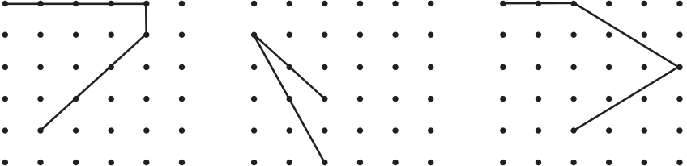</figure>
</article>
<nav class="pager"><a class="" data-nav="prev" href="../../09-symmetry/06-generating-shapes-having-lines-of-symmetry/index.html"><span class="dir">← Previous</span><span class="t">Generating shapes having lines of symmetry</span><span class="ch">Symmetry</span></a><a class="nx" data-nav="next" href="../../09-symmetry/08-rotational-symmetry-9.2/index.html"><span class="dir">Next →</span><span class="t">9.2 Rotational Symmetry</span><span class="ch">Symmetry</span></a></nav>
</main><footer class="site">Generated from the source textbook PDFs · text, figures and exercises belong to their respective publishers.</footer><script defer src="https://cdn.jsdelivr.net/npm/katex@0.16.11/dist/katex.min.js" crossorigin="anonymous"></script>
<script defer src="https://cdn.jsdelivr.net/npm/katex@0.16.11/dist/contrib/auto-render.min.js" crossorigin="anonymous"
  onload="renderMathInElement(document.body,{delimiters:[
    {left:'\\(',right:'\\)',display:false},
    {left:'$$',right:'$$',display:true},
    {left:'\\[',right:'\\]',display:true}],throwOnError:false,ignoredTags:['script','noscript','style','textarea','pre','code']})"></script>
<script src="../../../assets/book.js"></script>
<script defer src="../../../../assets/search.js"></script>
</body>
</html>
